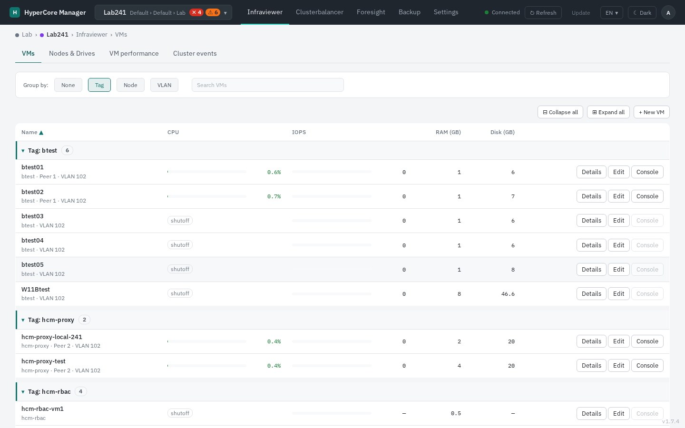
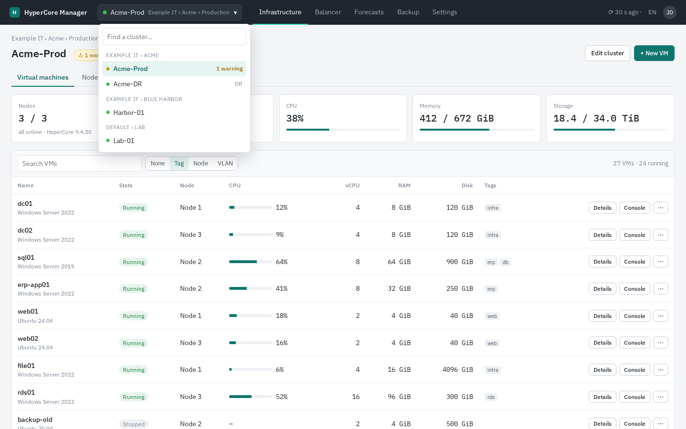
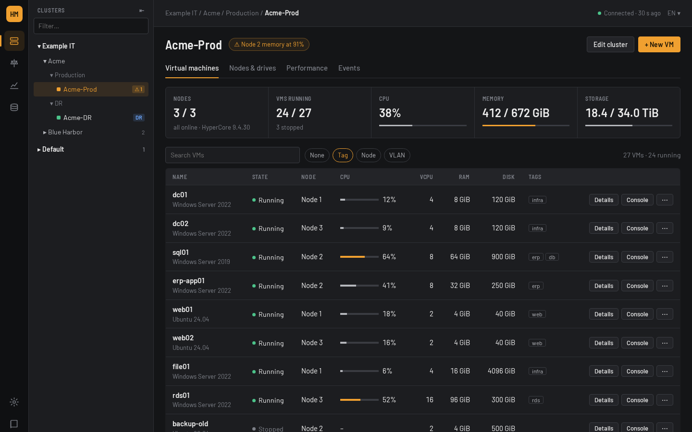
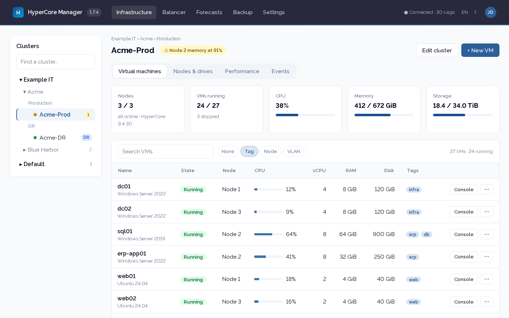

Visual identity: three mockups
The same screen (a cluster's VM list) in three directions, with the same data, next to what the dashboard looks like today. Click a picture to open the mockup itself.
Today
- Fonts
- Space Grotesk headings, JetBrains Mono for labels and numbers
- Colours
- blue-black, cyan and blue accents, glows
- Navigation
- cluster rail on the left, module tabs and sub-tabs across the top

A: Plex, light, top navigation
- Fonts
- IBM Plex Sans, IBM Plex Mono for figures
- Colours
- light grey page, graphite top bar, one teal accent
- Navigation
- everything in the top bar: a cluster switcher with the tenant tree in a dropdown (shown open), modules as tabs. No sidebar, so the table gets the full width.

B: Barlow, dark, icon rail and tree
- Fonts
- Barlow and Barlow Semi Condensed (an industrial, DIN-like sans)
- Colours
- warm charcoal, one amber signal colour, no glows
- Navigation
- a narrow icon rail for the modules, the tenant tree as a collapsible panel beside it, breadcrumb in the header

C: the sizer's look
- Fonts
- Raleway, self-hosted as in the sizer, on the sizer's 18 px base size
- Colours
- the sizer's tokens: light page, white bordered cards, navy bar with the blue gradient line, Scale's blue scale
- Navigation
- modules as text links in the navy bar, the tenant tree as a sticky card on the left (like the sizer's parameter panel). A wordmark instead of the Scale logo.
